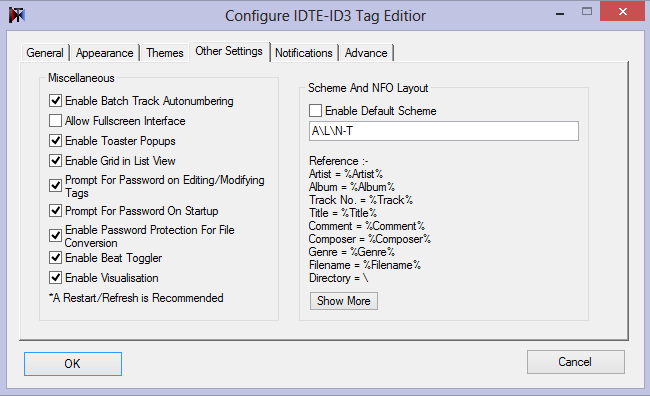

- About IDTE
- Quick Tutorial
- File Menu
- Edit Menu
- View Menu
- Organise Menu
- Tools Menu
- Playback Mode Menu
- Remove Menu
- Search Menu
- Export Menu
- Settings
- Album Art
- Lyrics
- Case Conversion
- Filename Conversion and Renaming
- Quick Tag Editing Mode
- Mini Player Mode
- Command-line Mode
- Changing Theme
- Upgrading IDTE
- Shell Extension
- Password Protection
- Session Management
- Wine Compatability
- License Information
- Contribute
- Further Help
- Credits
About IDTE
IDTE is a full featured Open-Source Tag editor cum Audio player which supports FLAC, APE, MP4, WMA, WAV, ID3, Vorbis and Lyrics Tags.With the help of IDTE you can Edit Tags of incomplete files, can rename files based on the tag information, export tag information, create playlists , Search for Incomplete Tags on Internet, Fetch Lyrics and/or Cover art ,Tag files from CUE Sheets or playlists, Process Multiple Files at Same Time,Play files in real time,add Sound FX,View visualizations and Lots More...
Official HomepageFollowings are some of the key features of IDTE
- Supports FLAC,APE,MP4,WAV,ID3,Vorbis and Lyrics tags reading,editing and tagging in various Audio formats.
- Supports playback of 40+ various lossy and lossless music formats.
- Rename files and tags based on tags or filenames.
- Supports online tag searching, lyrics and cover art fetching.
- Fully unicode compliant.
- Quick Tag editing mode and Mini Player mode.
- More Playlists options for keeping the music collection always arranged.
- Batch tag editing.
- Export tags information to whatever format you want.
- Multiple user-interfaces in order to fit for a particular environment.
- Password protection for secure access to tags alteration
- Playlists and CUE sheet support for playback as well as for tag editing
- Allows Forcefully adding ID3v2 tags to any file.
- Real time visualizations, sound FX, extended fields and much more...
About This Documentation
The goal of this document is to comprehensively explain the use of IDTE and its features to all the users. Since it is not obvious for every user to get all the features and all that stuff at once so, here we are. This Document expects you to have a good understanding of what tags or metadata of audio files is and an idea of what you want to achieve by using this software. If not, you may search them around onto internet and get the basic idea.
Quick Tutorial
Tutorial Overview
This tutorial will guide you to do some basic operation in IDTE i.e. saving or removing tags in files. You may also consider it as a quick tutorial for rush editing. However, these are the basic steps that may be require every time you want to modify the tags information.
Let's Begin
Adding or Saving Tags to Files
Open the IDTE, you will see the main screen as shown below. Your version of IDTE might look little different from the one shown below but, most of the functionality is however same.

- Add files to the listview using file > add file(s) or by using Ctrl+O or by pressing button in toolbar.
- You may also add folder to the listview using file > add folder / add folder (Recursively) or by using Ctrl+F or by pressing button in toolbar.
Now, select or highlight the file you want to edit by using the mouse or the keyboard. The tag information of the selected file will automatically be retrieved into the tag panel fields present on the right side. If there are multiple files, then by default the value " < keep > " will appear in all the fields of tag panel which means that, keep this field as it is with its previous value or contents in all the selected files.
Now, enter the tag information you want to add or edit into the files. You may also remove the information simply by leaving the field empty.
Now, Save the tag information into the files using file > save all or by using Ctrl+S or by pressing the button in toolbar.
Removing Tags From Files
Add files to the listview using file > add file(s) or by using Ctrl+O or by pressing button in toolbar.
You may also add folder to the listview using file > add folder / add folder (Recursively) or by using Ctrl+F or by pressing button in toolbar.
Now select or highlight the files by using the mouse or the keyboard.
Now, Remove the tags of the selected files by using remove > remove all tags or you may also select any tag type of your choice.
File Menu
Below is a menu by menu explanation on how to use the different options of file menu, please read carefully and if you face any problems that is not covered here, open a thread in our support forum.

 Add File(s)
Add File(s)
This function will shows a file selection dialog from which, you can select the file or multiple files in order to load into the listview of IDTE. While loading, the available tag information of file will be automatically retrieved into the list.
 Add Folder
Add Folder
This function will shows a folder selection tree from which, you can select the single folder (subfolders are not included) in order to load into the listview of IDTE. While loading, the available tag information of file will be automatically retrieved into the list.
 Add Folder (Recursively)
Add Folder (Recursively)
This function will shows a folder selection tree from which, you can select the folder (subfolders are included) in order to load into the listview of IDTE. While loading, the available tag information of file will be automatically retrieved into the list.
 Load Session
Load Session
This function will shows a file selection dialog from which, you can select and load the previous saved session file of IDTE. More information can be found in Session Management section.
 Load Playlist
Load Playlist
This function will shows a file selection dialog from which, you can select the playlist file for loading it into list. Supported playlists are WPL, M3U and PLS.
 Load CUE File\Sheet
Load CUE File\Sheet
This function will shows a file selection dialog from which, you can select the CUE file for loading it into list.
 Read Tags
Read Tags
This function will shows a folder selection tree from which, you can select the required folder (including subfolder) in order to read tag from files and after that, it will output the information in the text form using your default text editor.This function will create a file named "Taginfo.txt" which contains all the tag information, that was read by the IDTE in the same selected folder.
 Save Everything
Save Everything
This function saves the tag entered in the tag panel to the selected files. If you have selected < keep > at one of the fields on the tag panel, the value in the tag will not be changed.
 Save This Session
Save This Session
This function will shows a file selection dialog from which, you can select and Save the current session of IDTE as a session file. More information can be found in Session Management section.
 Save To
Save To
This function will shows a file selection dialog from which, you can save the selected files to some another place.
 Open Current file location
Open Current file location
This function will open the location of current selected file in the file explorer.
 Exit
Exit
This function will save the current session and exit the IDTE. You may also turn off the session saving feature of IDTE in Configuration in order to faster initialize and exit IDTE.
Edit Menu
Below is a menu by menu explanation on how to use the different options of edit menu, please read carefully and if you face any problems that is not covered here, open a thread in our support forum.
 Move Selected
Move Selected
This function will move the selected files in list to the user specified directory. Files which are currently playing, cannot be moved using this option therefore you have to stop the playback before moving them.
 Copy Selected
Copy Selected
This function will copy the selected files from the list to the user specified directory.
 Copy Tag
Copy Tag
This function will Copies text from all edit fields to the clipboard. This clipboard is different from the windows clipboard also, please note that cover art will not be copied into clipboard.
 Cut Tag
Cut Tag
This function will retrieve text from all edit fields to the clipboard and make them empty. This clipboard is different from the windows clipboard also, please note that cover art will not be included into clipboard.
 Paste Tag
Paste Tag
This function will Paste text in all the edit fields from the clipboard. This clipboard is different from the windows clipboard also, please note that cover art will not be pasted in this option.
 Rename Tag Files
Rename Tag Files
This function will shows a input box from where, you can enter the new name and rename the filenames of your files with a number in suffix.
Select All
This function will select or highlight all the items in listview of IDTE.
Deselect All
This function will deselect all the items in listview of IDTE.
Invert Selection
This function will invert the selection of files in listview e.g. if one file is selected in list then, using this option will select all the files except that previously selected file.
View Menu
Below is a menu by menu explanation on how to use the different options of view menu, please read carefully and if you face any problems that is not covered here, open a thread in our support forum.

Tag Details
This function will shows the message box containing all the tag information of the selected file in list.
 Cover Art
Cover Art
This function will open up your default image viewer in order to show the cover art of the selected file in list (If Present).
 IDTE Command Line Mode
IDTE Command Line Mode
This function will open the Command Prompt and shows a message box regarding the command line options accepted by IDTE. Please note - IDTE command line mode does not process tags other than ID3v2/v1 or APE.
 Refresh
Refresh
This function will Refresh all the contents in the list as well in the configuration.
 Visualization
Visualization
This function will shows a window named IDTE Visualization Box which shows the visualization synchronised with the current playing song. Note - You can change the visualizations simply by clicking on them.
 Equalizer
Equalizer
This function will shows the five band graphic Equalizer in order to sample the audio according to your need.
Organise Menu
Below is a menu by menu explanation on how to use the different options of organise menu, please read carefully and if you face any problems that is not covered here, open a thread in our support forum.
 Convert Selected Tags into Filename
Convert Selected Tags into Filename
This function will shows the input box for inputting the scheme and, convert the files according to their tag information. More information can be found at Filename Conversion and Renaming section.
 Tag Files From Filename
Tag Files From Filename
This function will shows the input box for inputting the scheme according to your filename pattern and, tag the files according to their filename. More information can be found at Filename Conversion and Renaming section.
 Make Playlist (One Per Artist)
Make Playlist (One Per Artist)
This function will shows the folder tree dialog for reading the tag information as well as for saving the resulting playlist(s) created by IDTE according to the artist information. Note - Every playlist will be named according to its artist name (IDTE will search recursively in subfolder while creating playlist).
 Make Playlist (One Per Album)
Make Playlist (One Per Album)
This function will shows the folder tree dialog for reading the tag information as well as for saving the resulting playlist(s) created by IDTE according to the Album information. Note - Every playlist will be named according to its album name (IDTE will search recursively in subfolder while creating playlist).
 Make Playlist (One Per Directory)
Make Playlist (One Per Directory)
This function will shows the folder tree dialog for reading the tag information as well as for saving the resulting playlist(s) according to the Folders. Note - Every playlist will be saved in its folder (IDTE will search recursively in subfolder while creating playlist).
 Make Playlist (From All Files in Directory)
Make Playlist (From All Files in Directory)
This function will shows the folder tree dialog for reading the tag information as well as for saving the resulting single playlist created by the IDTE from all the supported files in the folder (including subfolders).
 Make Playlist (From Selected Files)
Make Playlist (From Selected Files)
This function will shows the folder tree dialog for resulting single playlist created from all the selected files in the list.
Tools Menu
Below is a menu by menu explanation on how to use the different options of tools menu, please read carefully and if you face any problems that is not covered here, open a thread in our support forum.
 Clear All Fields
Clear All Fields
This function will clear up every text edit field in tag panel.
Refresh all fields
This function will refresh or re-retrieve all the data in the tag panel as well in the list.
 Quick Tag Editing Mode
Quick Tag Editing Mode
This function will open up the window named "Quick Tag Editing Mode" in order to tag the files without much hassel of navigating here or there. More Information can be found at Quick Tag Editing Mode section.
 Mini Mode
Mini Mode
This function will convert the "Giant" IDTE interface into a mini player. Very helpful for quick navigation in case, if you are using IDTE as a music player. More Information can be found at Mini Player Mode section.
 Configure IDTE
Configure IDTE
This function will open up a window named "Configure IDTE-ID3 Tag Editor" in order to set up the IDTE according to your needs. More Information can be found at Setings section.
Selected Filenames Case Conversion
This function will perform the different operations on the filename of the selected files. More information can be found at Case Conversion Section.
Remove Menu
Below is a menu by menu explanation on how to use the different options of remove menu, please read carefully and if you face any problems that is not covered here, open a thread in our support forum.

 Remove All Tags
Remove All Tags
This function will remove all the present tags in file.
Remove ID3V2 Tag Only
This function will remove the ID3V2 tag alone (if Present).
Remove ID3V1 Tag Only
This function will remove the ID3V1 tag alone (if Present).
Remove APE Tag Only
This function will remove the APE tag alone (if Present).
Remove Lyrics Tag Only
This function will remove the ID3V2 tag USLT Frame as well as the Lyrics Tag in the file (If present).
 Remove Album Art(ID3)
Remove Album Art(ID3)
This function will remove the ID3V2 album art from the file (if present).
Search Menu
Below is a menu by menu explanation on how to use the different options of search menu, please read carefully and if you face any problems that is not covered here, open a thread in our support forum.

 Search on FreeDB
Search on FreeDB
This function will open your default internet browser and search for the highlighted file tags into FreeDB Database and redirects you to that page from the browser.
Search on MusicBrainz
This function will open your default internet browser and search for the highlighted file tags into MusicBrainz Database and redirects you to that page from the browser.
Search Cover Art
This function will open your default internet browser and search for the highlighted file cover art into AlbumArt.org Database and redirects you to that page from the browser. You might also have to fill the captcha information before getting to the actual page.
Search On Google
This function will open your default internet browser and search for the highlighted file onto google and redirects you to that page from the browser.
Search Lyrics
This function will open your default internet browser and search for the lyrics of highlighted file onto wikilyrics and redirects you to that page from the browser.
Export Menu
Below is a menu by menu explanation on how to use the different options of export menu, please read carefully and if you face any problems that is not covered here, open a thread in our support forum.
 Export to Shareable XML Playlist (Spiff)
Export to Shareable XML Playlist (Spiff)
This function will export your selected or highlighted files into XML format playlist. For More Information regarding spiff format, please checkout the FAQ's .
 Export Tags to Text Information
Export Tags to Text Information
This function will export all your selected or highlighted files tag information into text information.
 Export & Create NFO Template
Export & Create NFO Template
This function will create a NFO template from the tag information of the selected files in IDTE. Resulting NFO Template will be a dot and backslash seperated template.
Export Tags to User Specified Format
This function will export all your selected or highlighted files tag information into the text information but, with the user specified extension instead of txt.
 Export to Html
Export to Html
This function will export all your selected or highlighted files tag information into the html format.
 Export Cover Art
Export Cover Art
This function will export or extract the cover art from the selected or highlighted files.
Settings and Configurations
Below is a explanation on how to configure the IDTE to its best so that, you can easily manage IDTE according to yourself.
General Tab
In general tab you will see the configuration as shown above.
- This function will clear the list on startup i.e. it will not let the IDTE to store its previous session. Note - By default IDTE restores its previous session but, however using this option will let the IDTE to take less time for loading and Closing.
This function will let the IDTE to show a small window showing the tips at startup. By default, this option is turned 'on' in IDTE.
This option will let the IDTE to check for updates on startup. By default this option is turned 'off' in IDTE.
This function is very helpful in case you want the IDTE to accept files directly through the file explorer using only send to menu. By default this option is turned 'off' in IDTE.
This function will let the IDTE to clear the list every time you drop,add file or folder into IDTE.
This function lets the IDTE to connect to the internet so that, it can fetch lyrics,coverart and search online.
This function lets the IDTE to show a messagebox while exiting IDTE. Helpful in case, you accidently press the exit button.
This function lets the IDTE to, by default start the folder browsing from the entered folder. Note - This function doesn't mean that IDTE will read tags from the specified folder on startup.
Miscellaneous Settings
This function will let the IDTE to show a small toaster popup on startup showing "Welcome to IDTE".
This function will let the IDTE to show a splash screen on startup.
This function will let the IDTE to automatically adjust the coloumns so that, every field is visible inside listview. By default this function is turned 'on' in IDTE.
This function will let the IDTE to run in admin mode instead of current user mode. You may checkout the "why?" button present on the side of this option for more details.
Password Protect
This function will prevent the IDTE from unauthorised acess. Please refer to Password Protection section for more details.
Appearance Tab
IDTE offers you to even select the fonts,size and colour for your user interface so that, you can set them according to your requirements. Most of the settings in this tab is understood however, following are some of the options.
This function will let you to select or specify fonts from the drop down list so that you can apply them to IDTE. This function works same for listview, tag panel and toaster popup.
This function will let you to select or specify the font size from the drop down list so that you can apply them to IDTE. This function works same for listview, tag panel and toaster popup.
This function will let you to select or specify the font colour from the drop down list so that you can apply them in IDTE. This function works same for listview, tag panel and toaster popup.
Themes Tab
Options in this tab will let you to select the user interface for your IDTE. For More Information please refer to Changing Theme Section.
Other Settings Tab
This function will let the IDTE to automatically assign ascending no.s to each 'Track' field in case of adding track no. to multiple file(s). By Default this function is turned 'on' in IDTE. Below is a example showing this functionality.
Above are some of the files with missing track no.s (# Coloumn). Now, assume that all you want to do is to add seperate track no.s to all these files because, no two songs can have the same track no. in this case.
As you can see, you just have to enter the starting track no. into the track field. And after doing that, you just have to save the tag.
Now, as you can see that, all the track no.s in the songs are different as well as are in a sequence. Voila! this is autonumbering. Now, assume doing this thing without autonumbering. In that case, all you have to do is to add track no. one by one to all the songs.
Note - This function will restrict addition of string in track numbers e.g. Track No. 1/2 will not be auto incremented and added to multiple files. However, tagging single file will still accept strings or numbers.Starts the IDTE without close, minimize and restore buttons for fullscreen interface. Note - Works best on screen resolution of 1366 X 760 pixels.
Enables / disables the notification toaster popups. By default it is turned 'on' in IDTE.
Enables / disables the grid lines appearing in Listview. this function is very helpful for selection selection purpose. By default this function is turned 'on' in IDTE.
If IDTE is password protected then this function will let the IDTE to prompt for password whenever a tag is modified or edited.
If IDTE is password protected then this function will let the IDTE to prompt for password on startup.
If IDTE is password protected then this function will let the IDTE to prompt for password whenever a file conversion takes place.
This function will enable the beat toggling in player.
This function will enable the visualization in player.
Enable Default Scheme
This function will enable the default scheme in filename to tag conversion so that, it will not prompt for the scheme anymore. For more information regarding scheme and filename conversion please refer to Filename Conversion and Renaming Section
Notification Tab
In this tab, most of the functionality is understood however, some of the functionalities are explained below. Please note that this functionality applies to both Toaster Popups and windows native tray notifications.
This function will let the IDTE to display the notification on playing new track in IDTE player.
This function will let the IDTE to display the notification on stopping any track in IDTE player.
This function will let the IDTE to display the notification on forwarding track in IDTE player.
This function will let the IDTE to display the notification on reversing track in IDTE player.
This function will let the IDTE to display the notification on pausing track in IDTE player.
This function will let the IDTE to display the notification if any error occurs.
This function will let the IDTE to display the notification on sucessful editing/modifying tags.
Preview Tray/Toast
This option will show the Tray/Toast preview of the notification.
Advance Tab
This tab is associated with the advance settings related to Tag saving.
Editing ID3 Tags
In this section, there is a choice of writing the ID3 tag version to file i.e. ID3v2 or ID3v1 or both. IDTE supports both reading and writing of ID3v2.4/2.3/2.2 and v1/v1.1 depending upon the file tag.
This option will let the IDTE to read the preferred tag in MP3 files. It is recommended that this option should be turned 'on' as, ID3v1 tags are getting obsolete therefore, most of the times there are chances are of getting the empty information in tag panel.
Forcing ID3 Tags
In this section, there is a choice of forcing the tag type to any file or to not force the tags at all.
Music Player Options
In this section, there is a choice of selecting either the IDTE embeded music player or the windows default player. It is recommended that you must use the IDTE embeded music player for music playback.
Tags Removal
In this section, there is a choice of activating the specific tag removal options.
Note - All the configuration settings are saved in a file named IDTE_Configuration.ini in my documents / documents folder in your Computer. If you want the IDTE to revert to its default settings then, delete this file in my document / documents folder, IDTE will automatically recover this file with its default settings.
Album Art
This Section will explain you how to do operations on Album art of a music files such as extracting, changing, removing, adding cover art. Some of the formats such as WAV, OGG etc. do not support cover art therefore, these operations are not applicable on those files.

This function will open your default image viewer in order to show the selected / highlighted file Album Art of file (if present).
This function will let you to directly set your cover art type to one of the following from its sub menu.
Please Note - Tags such as WMA and MP4 does not support different types of Album Art therefore, this option will not work for them.
This function will let you to choose a file for album art (JPEG or PNG) and add this file to the selected or highlighted music files or replace the previous one (if existed of same type).
This function will let you to extract the album art (JPEG or PNG) of selected files to the user selected output folder.
This option will open the IDTE mini web browser and fetch the cover art on discogs showing the results on IDTE mini web browser
This option will copy the album art of single selected or highlighted file.
This option will paste the album art of the previously copied file to the single/multiple selected/highlighted files.
This option will remove the album art of the selected or highlighted file. Note - Right now, it works for ID3 Tags Only.
Lyrics
This Section will explain you how to fetch or add lyrics to music files. Some of the formats such as WAV, OGG, MP4 etc. do not support lyrics tag therefore, these operations are not applicable on those files.

Procedure
You may add the lyrics to the music files in two ways.
To manually add the lyrics, select or highlight the music file then, add or write the lyrics in 'lyrics and More' tab. After that click the 'Done', There you go! now, your music files contains the lyrics.
To fetch the lyrics, select or highlight the music file then, hit the fetch button in 'lyrics and More' tab. If your fetching is sucessful then, lyrics will automatically appear on lyrics TextEdit else, it will prompt you for inputting the artist and title information for refetching.If the lyrics is still empty, then there is a possibility that the requested song is not present in the Online Databases of Lyrics Sources.You may also manually search the lyrics using Search > Search Lyrics.
Lyrics Sources (>>)
IDTE fetch lyrics using A-Z Lyrics and Lyrics.com. You may also change these sources by clicking '>>' button present near Fetch Button. It will show the options as follows :-
And select the appropriate source from the above options.
Case Conversion
This Section will explain you the filename case conversion facilities of IDTE. Note - This operation applies to both single or multiple selected or highlighted files.
This option will prompt you first, for entering the character/string to replace and then, prompt you for entering the charcter/string to replace with. e.g. if you want to replace the "_" with " " in 'A_Thousand_Suns.mp3' then, after entering the "_" and " " in first and second prompt respectively the, resulting file will be "A Thousand Suns.mp3".
This function will remove the leading 0 from every filename. e.g. filename "01-Linkin Park - A Light that never comes.mp3" will be converted into "1-Linkin Park - A Light that never comes.mp3"
This function will add the leading 0 to every filename (if not already present). e.g. filename "1-Linkin Park - A Light that never comes.mp3" will be converted into "01-Linkin Park - A Light that never comes.mp3"
This function will uppercase every first letter of every word. e.g. filename "a thousand suns.mp3" will be converted into "A Thousand Suns.mp3"
This function will lowercase every first letter of every word. e.g. filename "A Thousand Suns.mp3" will be converted into "a thousand suns.mp3"
This function will uppercase every letter of every word. e.g. filename "A Thousand Suns.mp3" will be converted into "A THOUSAND SUNS.mp3"
This function will lowercase every letter of every word. e.g. filename "A THOUSAND SUNS.mp3" will be converted into "a thousand suns.mp3"
NOTE - Please reload the files after coverting them because, they might appear as dead in IDTE (depending upon operation).
Filename Conversion and Renaming
This Section will explain you how to use the facilities of filename conversion to tag and vise-versa in IDTE.Conversion basically means getting tag information from parts of the filename or renaming files based on the information stored in the tag of an audio file.
Tag to filename Conversion
This option will let you to convert the selected or highlighted files tag information into filename .The procedure is as follows :-
Add files into IDTE and select all those files which you would like to convert.
go to 'Organise > Convert Selected tags into Filenames' and it will prompt you for entering the scheme.
What is a Scheme ?
Scheme is a way of arranging the different parts of a tag such as album, artist, track, title etc. in a particular fashion so that, the resulting filename satisfies the scheme and result in expected filename.
Following are the tokens which can be used with scheme:-
Example :-
A token of %Artist%\%Album% - %Year%\%Track% - %Title% will be equivalent to Onerepublic \ Waking Up - 2010 \ 01 - Passenger.mp3 which implies "01 - Passenger.mp3" file is in "Waking up - 2010" sub-folder of "Onerepublic" Folder.
After inputting the string, select the OK button and as per your scheme, IDTE will convert the files. File conversion is very helpful in case of organizing your music files.
NOTE -> Characters which are illegal in filename except '\' are not accepted in renaming filename.
Filename to Tag Conversion
This option will let you to convert the selected or highlighted files filename into tag information .The procedure is as follows :-
Add files into IDTE and select all those files which you would like to convert.
go to 'Organise > Tag files from filename' and it will prompt you for entering the scheme.
What is a Scheme ?
Scheme is a way of arranging the different parts of a tag such as album, artist, track, title etc. in a particular fashion so that, the resulting filename satisfies the scheme and result in expected filename.
Following are the tokens which can be used with scheme:-
Example :-
A token of %Artist% - %Album% - %Track% - %Title% will be used for Onerepublic - Waking Up - 01 - Passenger.mp3 which implies that , Set the Artist to "Onerepublic" , Album to "Waking up", Track to "01" and Title to "Passenger"
After inputting the string, select the OK button and as per your scheme, IDTE will convert the filename into tag.
NOTE -> Any Special character except hypens are not accepted in filename to tag conversion therefore, it is recommended to case convert the filename in '-' form before Converting.
Quick Tag Editing Mode
This is a special tag editing mode of IDTE which, allows the frequent addition of tags. To open quick tag editing mode goto 'tools > Quick Tag Editing mode' or press the button.
In this mode of tag editing, instead of navigating up and down in listview there are two buttons ">>" and "<<" for navigation which, make it easier to navigate through the list. This mode is very helpful for those users, who want edit tags without navigating here and there i.e. who only wants to tag files using TAB and ENTER. Hotkeys.
Mini Player Mode
To switch to the mini mode go to 'tools > mini mode' or press Alt+M or press the button.
About
Mini player mode let the IDTE to convert its big screen interface into mini mode. This mode is intended to provide the quick access to all the plaback options. Global Hotkeys are also supported in Mini mode.
On Top
This option will let the mini mode to stay always on the top of other windows (if checked).
Tips
You May Scroll Up/down in order to increase/decrease the volume level while playing file in IDTE.
IDTE Command-Line Mode
This option will enable the user to add the ID3 tags to file using IDTE command line mode. You may access the IDTE command line tool outside of IDTE interface in 'Bin'Folder.
As you can see, IDTE will automatically enters into the bin folder for accessing the command line mode.
Help
Saves all the Tag Information in Taginfo.txt and Cover.jpg/png in current Folder
Write Cover Art to the Filename.
Remove all Tags From the Filename.(ID3v1,v2 and APEv2)
Remove ID3v1 Tag from the Filename
Remove ID3v2 Tag
Remove APE Tag
Changing Theme
IDTE offers three different User Interfaces in order to set your tagging environment in the way you like.
How To Change Theme ?
- Open IDTE
- Go to 'Tools > Configure IDTE' and Open the Themes Tab.
- It will appear as shown below.
- Click on the appropriate button and apply the theme.
- Now Click OK.
- In order to review changes, please restart the IDTE.
Theme Professional

Theme Rigid

Upgrading IDTE
This section will explain you how to the upgrade the IDTE to its newer version. Since, newer versions includes all the new features and bug fixes therefore, please read carefully and if you face any problems that is not covered here, open a thread in our support forum
NOTE - You may turn 'on' the automatic update option in IDTE Settings, which will notify you about IDTE updates on, IDTE startup.
Steps for Upgrading the IDTE Manually

NOTE - It is recommended that, you must uninstall the previous version before installing the newer version of IDTE.
Shell Extension
To increase the functionality of IDTE, you may include the IDTE in Shell. Don't worry, it will not spoil your context menu instead, it will add entry into your "Send to" Submenu
Steps:
NOTE - To remove the entry from "send to" menu,follow the same procedure but, uncheck the checkbox in step 3.
Password Protection
IDTE offers password protection in order to prevent the unauthorised access to the IDTE.
How to Password Protect ?
- Open IDTE in Admin Mode.
- Now, go to 'tools > configure IDTE'.
- Enter the password in the password section of general tab. NOTE - Password must be of atleast 8 characters.
- Now, click on Set Password. It will show you a messagebox in order to set seperate prompts.
- Now, Go to Other Settings tab and set the prompts according to your requirements.
- Click OK, Voila! Everthing Done.
Session Management
IDTE allows loading and saving of session files. By default IDTE restores the Last Session but, you may also load any previously saved session.
Saving a Session
- Open IDTE
- Load some files into it using 'file > add file(s) or folder'
- Now, go to 'file > save this session', it will prompt you for entering the location and filename in order to save the session.
- Everything Done.
Loading a Session
- Open IDTE
- Load the previously saved session using 'file > load session'.
- Now, Browse for the previously saved file and click OK.
- Everything Done. IDTE will automatically load all the data using session file.
Wine Compatability
IDTE is fully compatible with the wine environment.Therefore, linux/mac users may also take advantage of IDTE on their machines.
IDTE do not require any external dependencies and utilizes its native libraries therefore, it is fully portable.
How to :
- Install and configure WINE in your Linux/Mac machines from Here.
- Now, install IDTE into it just by running the setup or use the portable version.
- Now, run IDTE in wine HQ
- There you go!
This is how IDTE looks in wine (Opensuse 12.3 Distro):-
Great Work by WINE team. :)
License
IDTE- ID3 Tag Editor by Rajat kosh Copyright (c) 2013-14 Team IDTE IDTE is free software: you can redistribute it and/or modify it under the terms of the GNU General Public License as published by the Free Software Foundation, either version 3 of the License, or (at your option) any later version. IDTE is distributed in the hope that it will be useful, but WITHOUT ANY WARRANTY; without even the implied warranty of MERCHANTABILITY or FITNESS FOR A PARTICULAR PURPOSE. See the GNU General Public License for more details. You should have received a copy of the GNU General Public License along with IDTE .If not, see http://www.gnu.org/licenses/.
Bass.dll and Plugins By UN4SEEN License: BASS is free for non-commercial use. If you are a non-commercial entity (eg. an individual) and you are not charging for your product, and the product has no other commercial purpose, then you can use BASS in it for free. The full license is available from their website.
IDTE is released under GNU GPL but some of the modules/libraries used in IDTE are not GPL. Please check their licenses before Using/Modifying them
Contribute
Contribution to the project is always welcome, no matter whether you are a developer, or not.
If You Are a Programmer
You can help us by :
- Introducing new features.
- Improving features.
- Tracking Bugs.
- Porting to a new platform (Yes, we are working so hard on it).
If You Are a Writer Who
- Like or never used IDTE.
- Run into a problem and end up solving it.
Then, you can help us make our documentation better or even more polished, Create tutorials or provide answers on the forum. Help us give the best support to everyone.
If You Are a Designer
You can help with your design skills by :.
- Making, repairing and updating the websites.
- Create or suggest new skins.
- Create new icons, screenshots, etc.
If You Are a Tester
You can test and report bugs.
If You Are a Simple User
You can help IDTE by:
- Suggesting Features.
- Reporting Problems.
Promote IDTE
You can help to promote IDTE by:
- Talking about IDTE to your friends and family.
- Donating money.
For Further Help
Main Website
http://sourceforge.net/projects/idteid3tagedito/
Forums
http://sourceforge.net/p/idteid3tagedito/discussion/general/
Request Features
Open a new ticket in the Request feature section.
There is no guarantee it will be added however; what is a great feature for one person might be a big nuisance for another, or it simply is too difficult or time consuming to add it in. They are hints as to what are the most wished-for additions or modifications to the software, and they will be considered on the basis of urgency, popularity, available developer time and technical feasibility
Report Bugs
Open a new ticket in the Bug report section.
If you find that IDTE isn't working correctly or plain crashing, you probably encountered a bug. First check if you have the latest version, each release IDTE gets improved and bugs get fixed (unfortunately, sometimes added as well so always tread careful when updating).Check the forums: maybe other users noticed it as well and found a fix or are in discussion.
Search for it and if it's not there, you can add it and help the developers find and fix it.
Credits
Designed By Rohitink.com
A biggest thanks goes to Mr. Rohit Tripathi for carrying out this help manual in the best possible way. This help file is designed and improvised by the RohitInk.com exclusively for IDTE.
{kind=link}